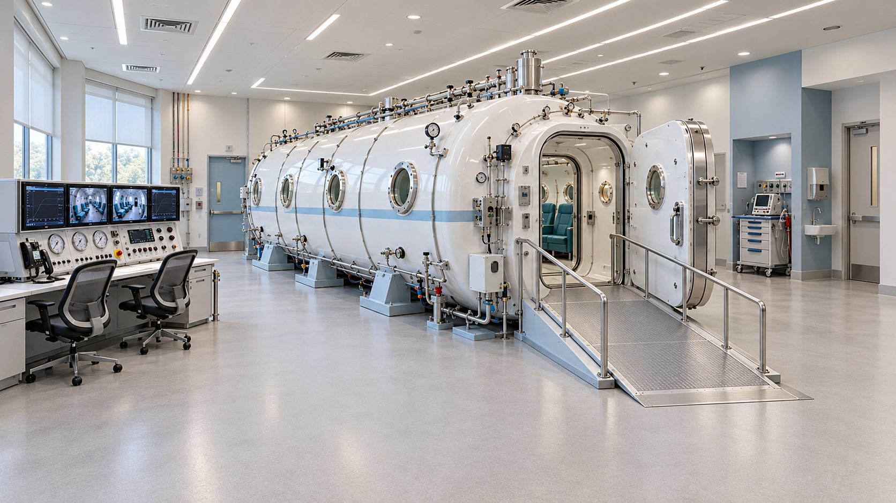
How can one department bring together patients whose needs are radically different?
A patient may arrive from the Emergency Department after carbon monoxide poisoning, from the wound clinic with a complex diabetic ulcer, or from oncology follow-up to treat a late radiation injury. One specialty brings them together — but their clinical condition and the way care is delivered to them define the nature of the unit, its equipment and its organisation.
Understanding this department starts with the patient, then moves to the chamber, operations and planning.
Hyperbaric Oxygen Therapy (HBOT) is a medical procedure in which the patient breathes medical oxygen inside a chamber where the pressure surrounding the body is raised above normal atmospheric pressure.
This increases the oxygen available to the tissues. The intended benefit depends on the condition: it may include treating the effects of gas bubbles, supporting the healing of hypoxic tissue, or helping to treat certain infections. Giving oxygen by mask in an ordinary room does not achieve the same effect — pressure is an essential part of the treatment.
HBOT is usually one part of a wider treatment plan that includes other medical or surgical interventions. [1, 2]
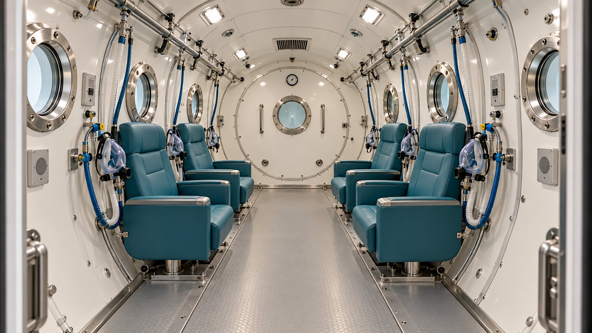
Multiplace Chamber — Six-Seat Interior with Built-In Breathing System
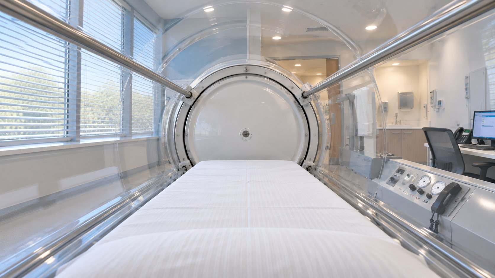
Monoplace Chamber — Patient View Inside the Transparent Capsule
The unit does not receive a single patient category, and having a condition does not mean automatic eligibility for treatment. The main referral groups are:
The strength of recommendations and regulatory coverage varies between conditions and countries. A condition listed in a professional reference is not automatically approved by every licensing body or insurer. Shortness of breath alone is not a reason for direct referral to the chamber — it is a symptom requiring diagnosis and appropriate care first. [1, 3, 4]
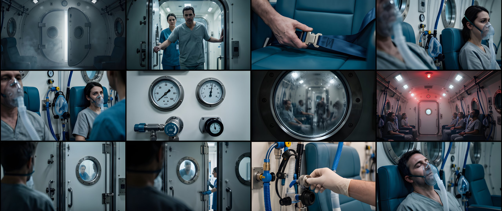
Storyboard — Patient Preparation, Oxygen Masks & In-Session Monitoring
Referrals may come from many departments. Eligibility is reviewed by the specialist physician — including the diagnosis, general condition, risks, ability to tolerate pressure and any required tests. [2, 3]
| Referring Department | Typical Referral | Planning Implication |
|---|---|---|
| Emergency Department | CO poisoning, gas embolism, diving accidents | Urgent access — unscheduled treatment readiness |
| Intensive Care | Critically ill, ventilated or monitored patients | Bed / stretcher route — pressure-compatible life support |
| Wound & Diabetes Clinics | Selected diabetic foot wounds | Scheduled outpatient series |
| Surgery & Burns | Grafts, flaps, crush injuries, burns | Mixed — inpatient and outpatient |
| Infectious Diseases & Orthopaedics | Necrotising infection, refractory osteomyelitis | Inpatient — infection control review |
| Radiotherapy Follow-up | Late radiation tissue injury | Scheduled outpatient series |
| ENT & Ophthalmology | Sudden hearing loss, retinal artery occlusion | Time-sensitive — fast-track assessment |
This difference is the basis for deciding the level of service and the resources required — not the number of seats alone.
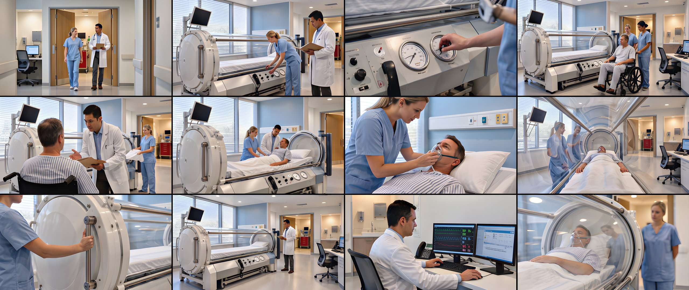
Storyboard — Monoplace Patient Journey: Arrival, Assessment, Loading & Treatment
| Step | Content |
|---|---|
| 1 — Assessment & Plan | Suitability and prescription are set; benefits, risks and session expectations are explained. |
| 2 — Preparation | Change of clothing per the safety policy, storage of belongings, review of permitted materials and devices, vital signs or blood glucose where the condition requires. |
| 3 — Pre-Entry Safety Check | Confirms patient readiness, equipment, communication, and the plan for handling the patient's needs during the session. |
| 4 — Compression | Chamber pressure is raised gradually to the prescribed level, monitoring tolerance and ear-equalisation instructions. |
| 5 — Treatment & Monitoring | The patient breathes oxygen per protocol; air breaks may be included per the prescription. |
| 6 — Decompression & Review | Pressure is reduced in a controlled way; the patient is assessed before discharge or return to the referring department. |
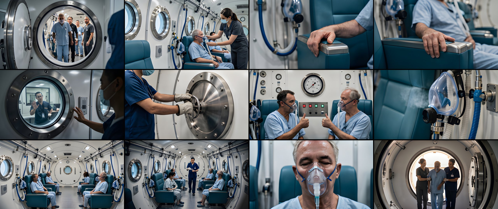
Storyboard — Multiplace Session: Entry, Compression, Treatment & Exit
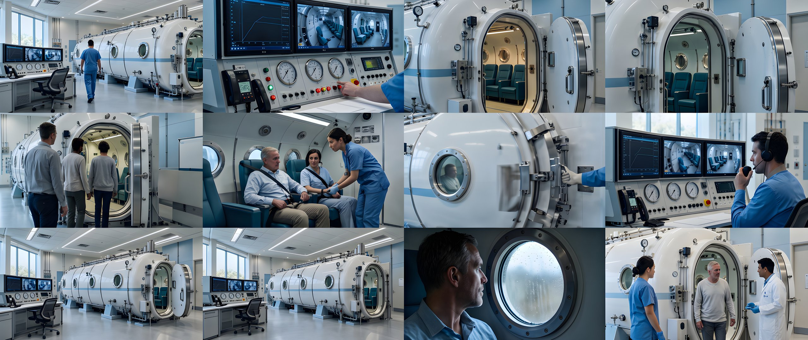
Storyboard — Staff Roles: Operator, Inside Attendant & Physician Review
System selection combines activity volume, patient condition, clinical access, staffing, technical infrastructure and the emergency plan. [2, 3, 5]
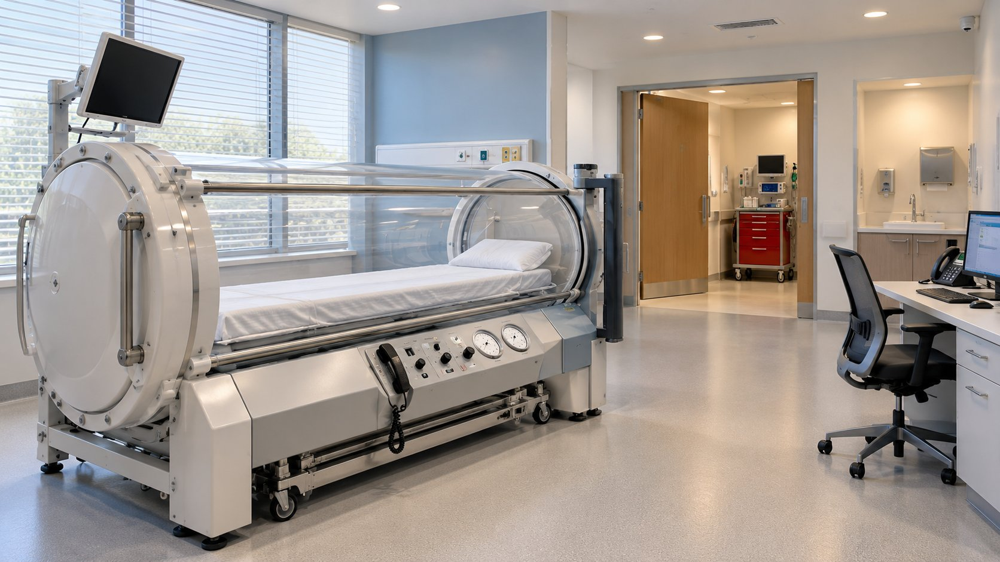
Monoplace Treatment Room — Chamber, Operator Desk & Clinical Support
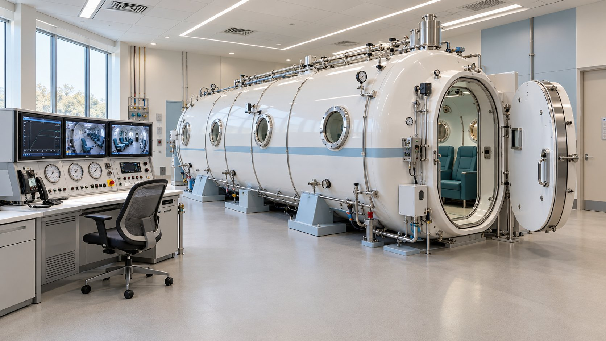
Multiplace Suite — Chamber Hall & External Control Station
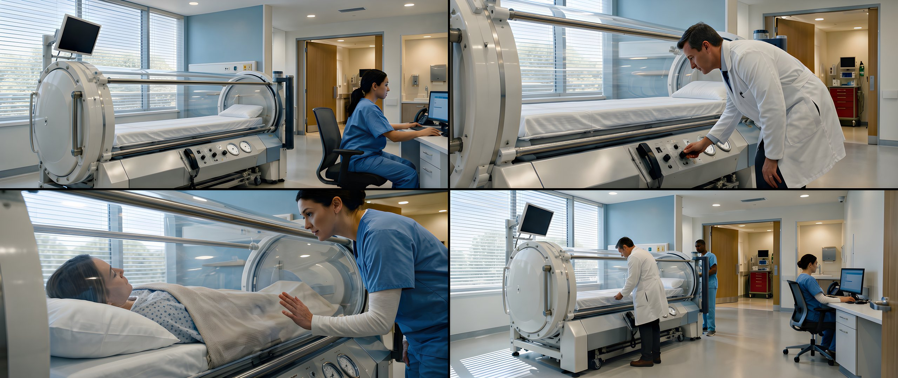
Storyboard — Monoplace Room: Operator Console, Loading & Bedside Communication
Three different things must not be confused:
| Term | Meaning |
|---|---|
| Two-compartment system | In some multiplace systems: one main treatment chamber plus a personnel entry lock. |
| Airlock (entry lock) | A space whose pressure can be equalised, allowing entry or exit while the main treatment chamber stays under pressure. It is not simply an extra door. |
| Three / four compartments | Some systems offer two main treatment chambers with entry locks, per design. Compartment count alone does not prove independent sessions can run — that depends on the approved control, gas, equipment and operating system. |
| Medical lock | A small lock for passing supplies — different from the personnel entry lock. |
[5, 6]
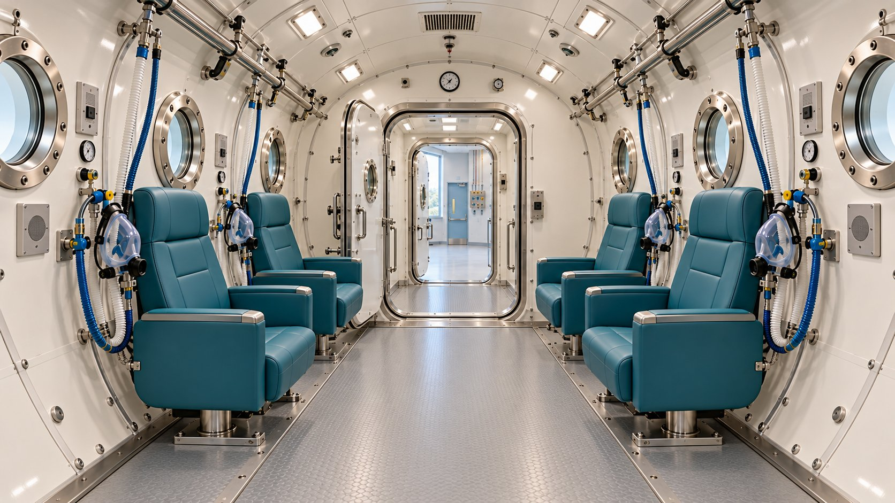
Treatment Chamber Looking Through the Personnel Entry Lock
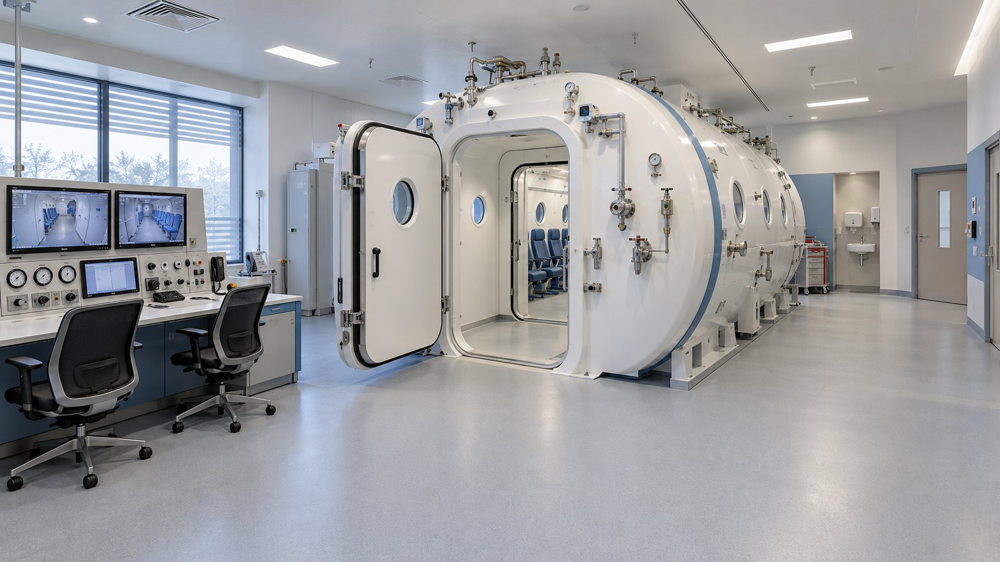
Entry Lock Door Open — Equalised Access to the Main Chamber
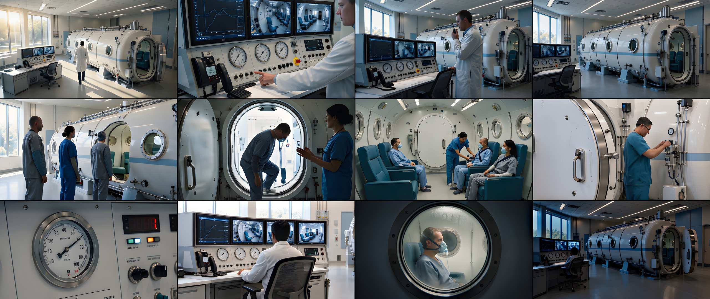
Storyboard — Lock Operation, Door Handling & Viewport Observation
The review covered Sechrist, HAUX-LIFE-SUPPORT and Perry Baromedical to understand differences in configuration and requirements — with no commercial ranking between them.
| Family / System | Manufacturer | Type | Notes |
|---|---|---|---|
| QUADRO | HAUX | Multiplace — rectangular | Seated or lying patients; multi-compartment configurations |
| STARMED | HAUX | Multiplace — cylindrical | Diameters, doors and arrangements vary per project |
| MINI-QUADRO / DUOX | HAUX | Compact rectangular | 3–6 seated patients, or one lying patient + attendant (DUOX) — alternatives, not a combined occupancy |
| OXYSTAR | HAUX | Monoplace — transparent | Oxygen-breathing variants show why the actual model must be reviewed |
| H-Series (e.g. 3600H) | Sechrist | Monoplace | Patient loading, communication, control and compatible medical support per configuration |
| SIGMA Multiplace | Perry Baromedical | Multiplace | Several standard configurations; seated, lying and wheelchair options; entry lock and separate control station |
The chamber is the centre of the service, but its operation depends on a supporting programme. Preliminary functional programme for review:
| Function | Zone | Observation |
|---|---|---|
| Reception & Waiting | Public | Repeated outpatient series — comfortable, wayfinding to changing |
| Examination & Consultation | Clinical | Eligibility review and pre-session assessment |
| Preparation & Observation | Clinical | Accommodates stretchers when required |
| Changing, Lockers & Accessible WC | Public | Change of clothing per the oxygen-safety policy |
| Chamber Hall & Control Station | Treatment | Sized on the actual equipment layout — see Section 09 |
| Equipment, Consumables & Linen Stores | Support | Pressure-compatible equipment kept separate |
| Clean & Dirty Utility | Support | Masks and reusable parts processed per instructions |
| Compressors, Air Treatment, Gas Sources & Reserves | Technical | Depending on the chamber system |
| Staff Facilities & Administration | Support | Physician, nursing, operator and safety roles |
This is a programming list for the project — not a requirement for a separate room per function. Sharing and combining are decided by operations, infection control and licensing requirements. The unit's relationship with Emergency, inpatient wards and ICU is studied according to the service scope, with practical access for patients and operating supplies. [9, 10]
There is no single area that suits every six-seat multiplace chamber.
The area is built on the actual equipment layout, including:
Knowing the internal diameter or seat area is not enough to define the hall area.
| iHFG Reference Room | Applies To | Notes | Net Area (m²) |
|---|---|---|---|
| HBOT Room — 1 Chamber | One monoplace chamber | Room sheet describes a 1,400 mm clear door opening — not a general size for multiplace delivery | 40 |
| HBOT Room — 2 Chambers | Two monoplace chambers | Does not mean a two-seat multiplace chamber | 60 |
| Multiplace Chamber Hall | Per selected system | Derived from the certified vendor layout and clearances | Per vendor |
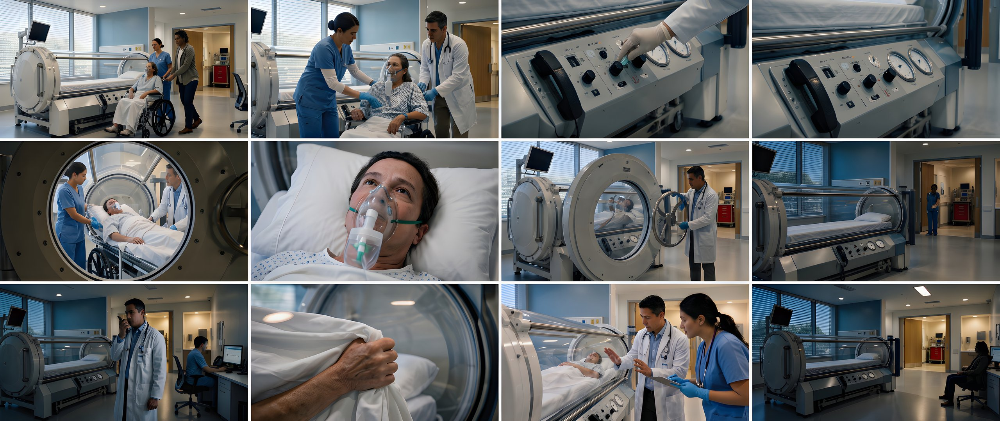
Storyboard — Monoplace Room: Loading Clearance, Wheelchair Transfer & Staff Positions
| Chamber System | Requirement |
|---|---|
| Breathing Gas | Breathing, supply and gas exhaust system appropriate to each position |
| Communication & Monitoring | Two-way communication, viewing and monitoring |
| Pressure Control | Pressure control, relief valves and alarms |
| Locks | Personnel lock and supply (medical) lock where included in the system |
| Care Equipment | Equipment compatible with the pressurised environment |
| Fire Suppression | System appropriate to the approved configuration |
| Building Coordination | Scope |
|---|---|
| Control Station | Line of sight, communication, monitoring and practical alarm response — with the intervention route kept clear |
| Air & Gases | Air quality, gas sources and reserves |
| Exhaust | Discharge of chamber exhaust |
| Electrical | Electrical loads; normal and standby power according to the criticality of each function |
| Room Pressure | Chamber pressure differs from the surrounding hall air pressure — the word "hyperbaric" does not by itself require the architectural room to be positive or negative pressure |
[5, 6, 8]
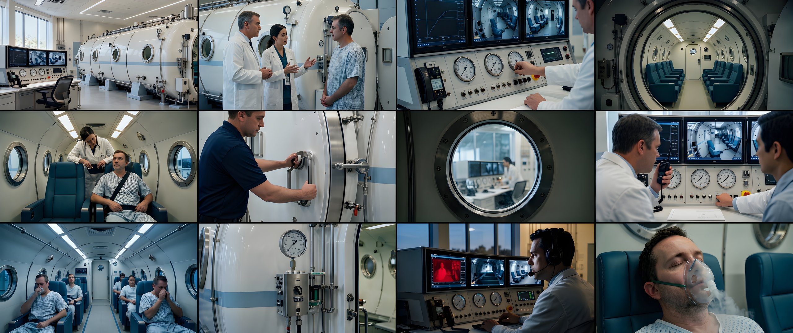
Storyboard — Control Station: Monitoring, Communication & Pressure Control
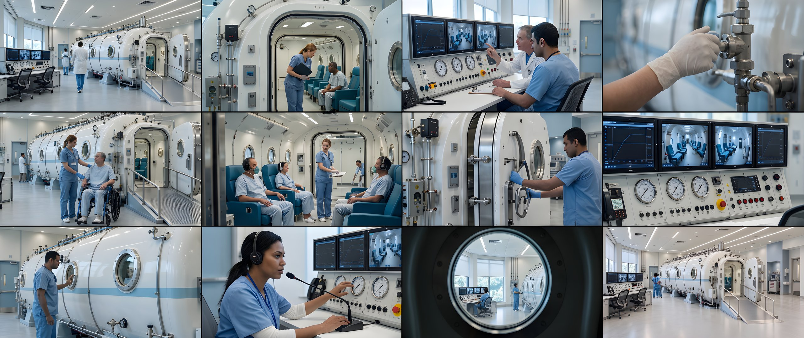
Storyboard — Operator Console, Valve Panel & Team Coordination
High oxygen concentration increases fire risk. Safety is therefore tied to manufacturer instructions, grounding, permitted clothing and materials, team training, continuous monitoring and documented maintenance — points the FDA reaffirmed in its safety letter of 25 August 2025.
| Operational Consideration | Observation |
|---|---|
| Cleaning | Compatible with the device instructions |
| Clean / Used Separation | Clean supplies kept separate from used items |
| Masks & Reusable Parts | Processed according to their instructions |
| Group Sessions | Assess whether patients are suitable to share a multiplace session |
| Roles | Clear responsibilities for physician, nursing, operator, inside attendant, safety and maintenance |
| Scenarios | Clinical deterioration, loss of services and fire |
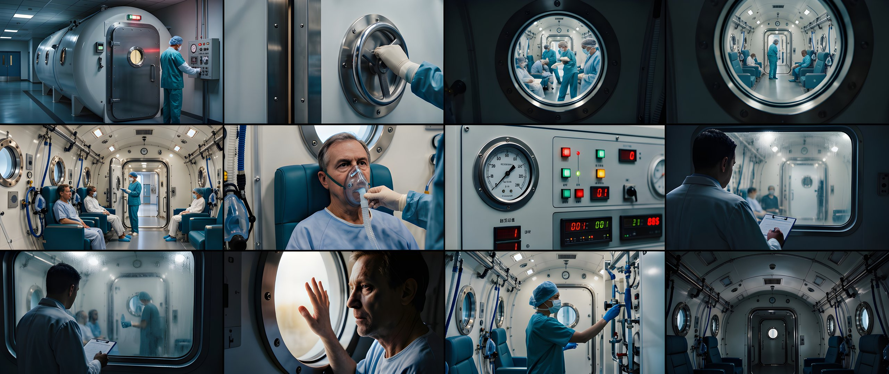
Storyboard — Safety Checks, Alarms & Emergency Drill
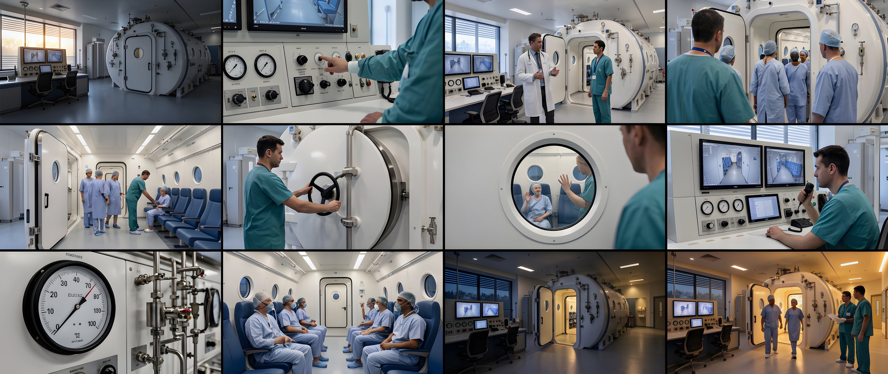
Storyboard — Team Briefing & Multiplace Operations
Each reference has a different function:
| Role | Reference | Scope |
|---|---|---|
| Licensing Authority | DHA HBOT Standard v2.2 (announced 29 Jan 2026) | UAE Ministerial Resolution 177 / 2024 | Dubai licensing requirements; UAE national standards |
| Health Planning | iHFG — Hyperbaric Chamber Therapy Unit (May 2025) | Functional planning, with related RDS and RLS sheets |
| Local Comparative | DoH Abu Dhabi HBOT Standard (April 2019) | Status and updates to be verified before applying to a project |
| Facility Safety | NFPA 99 — Chapter 14, Hyperbaric Facilities | Per the edition adopted for the project |
| Pressure Vessel | ASME PVHO-1 | Design, fabrication, inspection and testing of pressure vessels for human occupancy |
| European Route | EN 14931 | Performance, safety and testing of multiplace chamber systems |
| Operations & Practice | European Code of Good Practice for HBOT (Review 2022) | Operational and clinical practice |
These references do not all replace one another, and they do not automatically become local law. Mandatory status is defined by the project location, the competent authority and the device approval route. [5, 9, 10, 14–18]
The department is not defined by the shape of the capsule alone.
It is a clinical service that brings together patients with very different needs, a specialised team, a pressure vessel, gas, control and safety systems, and a functional programme that makes it possible to operate.
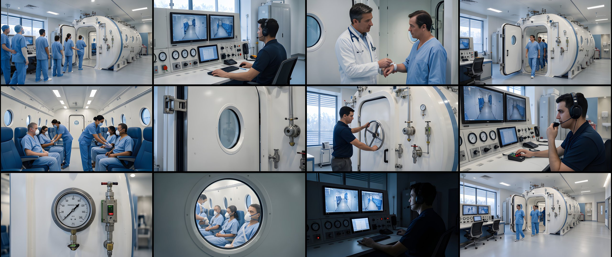
Storyboard — Multiplace Unit in Operation: Patients, Attendant & Control Team
This research brief is prepared from publicly available clinical references, manufacturer catalogues and regulatory publications. It does not prescribe areas, heights, gas systems or emergency sequences for a specific project — these depend on the selected chamber's certified documentation, the competent authority and the appointed clinical and safety team. All images are AI-assisted illustrative visualisations and do not represent construction drawings or evidence of compliance.
How do the chamber's supply, entry into the building, assembly and future replacement affect the design and the construction sequence?
Chamber Delivered Through a Temporary Façade Opening
Modular Chamber Sections on Transport Trailers
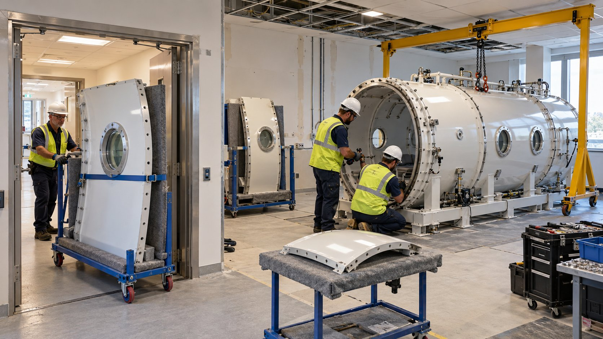
In-Situ Assembly — Gantry Crane, Door Modules & Bolted Sections
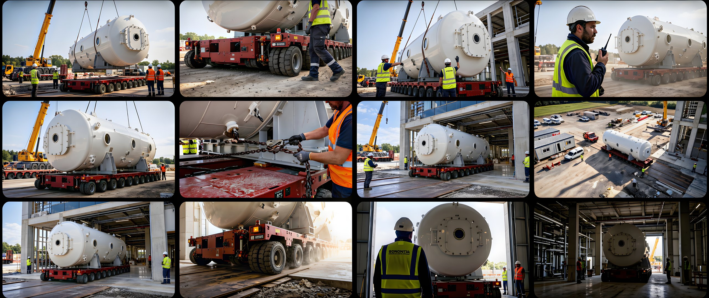
Storyboard — Crane Lift, Heavy Transport & Site Logistics
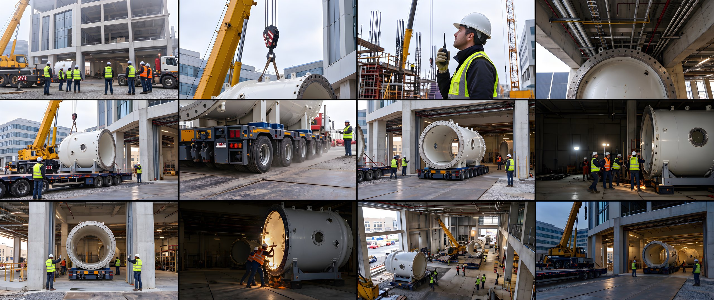
Storyboard — Building Entry Route & Structural Opening
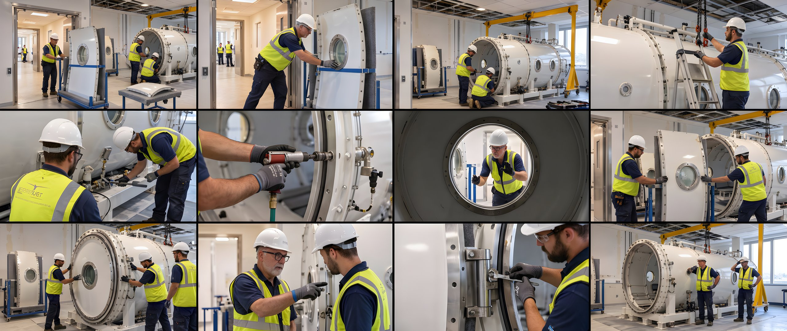
Storyboard — Section Assembly, Door Fitting & Inspection